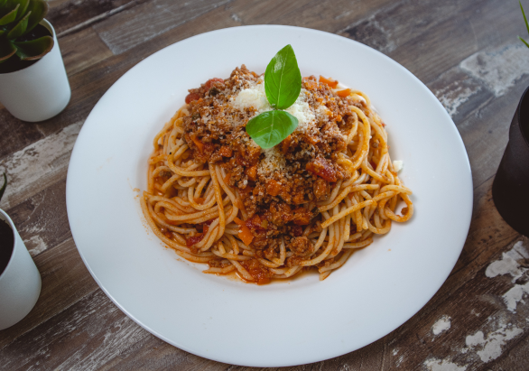

Massas
As massas conquistaram o mundo pelo seu sabor e sua versatilidade. É o prato perfeito para um jantar especial, um almoço de domingo ou mesmo para uma reunião com os amigos.
- Receitas de Massas
- Macarronada
As massas conquistaram o mundo pelo seu sabor e sua versatilidade. É o prato perfeito para um jantar especial, um almoço de domingo ou mesmo para uma reunião com os amigos.
Quer saber um sinônimo para felicidade? Se chama coxinha. Uma paixão popular, o salgado é nosso amigo para todas as horas.
Saborear deliciosos doces pode ser uma ótima maneira de adoçar o seu dia , independente da ocasião, não é mesmo? Confira receitas praticas e rapidas!
Ah, o Happy Hour! Um dos momentos mais desejados da semana, por ser sinônimo de diversão e descontração, seja com os colegas do trabalho, como com os amigos ou familiares.